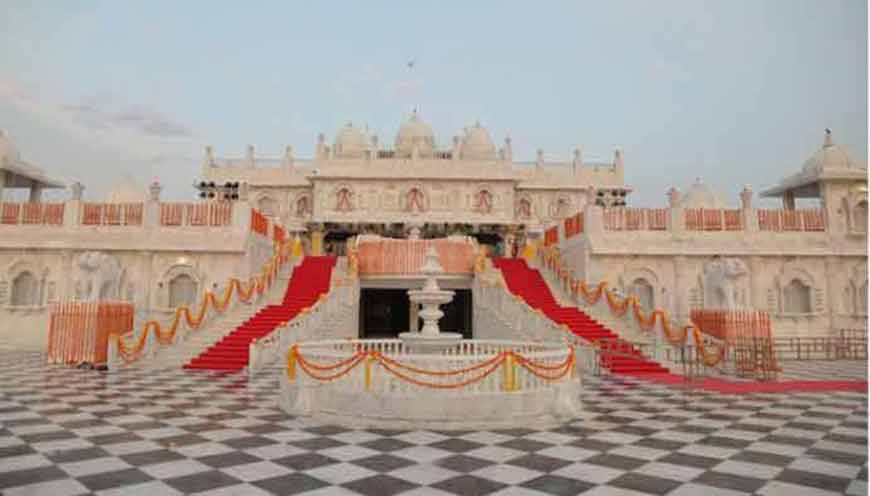
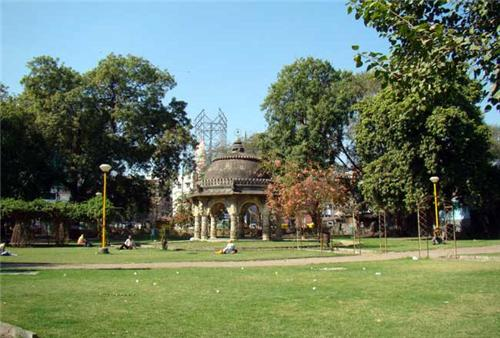
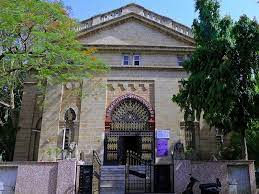
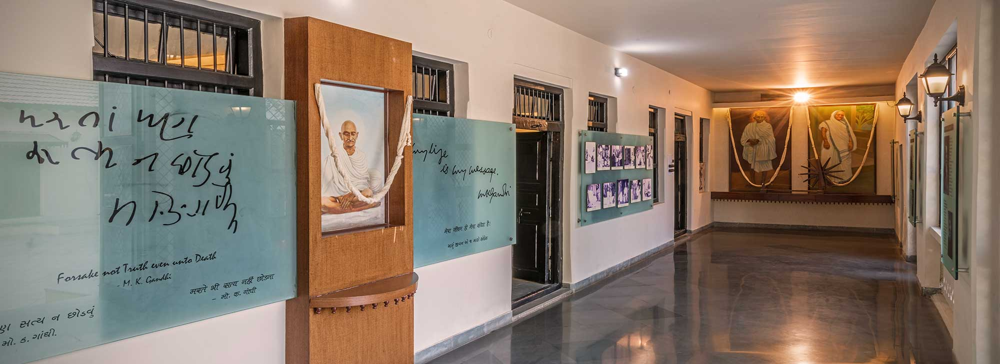
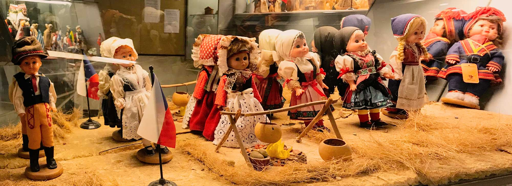
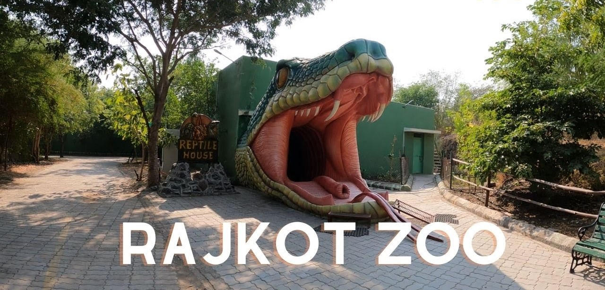

The Aji river is one of the most important rivers of the region. It supplies considerable water for drinking as well as for agricultural purposes, and is also often referred to as the ‘lifeline of Rajkot’. There are four dams across the Aji river,the garden and the zoo were inaugurated later.This dam, along with the Nyari Dam, makes for an essential source of water for Rajkot.
ISKCON Temple is a temple where you get direct connection with God.Super newly constructed temple made of marble.It is Hare Krishna temple, community, and ashram dedicated to the practice of bhakti-yoga or loving service to.
Jubilee Garden is a hangout place with family.Good greenery and great atmosphere.The perfect getaway due to its pleasant ambiance and plush greenery. The beautiful pathways fringed with trees and well manicured gardens with swings are a mesmerising sight balancing with this fastest developing city of Gujarat.These soothing environs are well complemented by the hordes of activities offered to the visitors of this garden.For people of all ages, Jubilee Garden in Rajkot has something to offer.
The Watson Museum, considered to be one of the best among the seven such museums , has collections of precious objects from the princely State of Rajkot.It holds invaluable articles,artefacts, photographs, a reference library and the museum's publications are sold through a counter.
Kaba Gandhi No Delo, Rajkot was Indian leader Mahatma Gandhi's primary family home in India , including during those years when he stayed in London and in South Africa.Kaba Gandhi No Delo has now been converted into a museum called Gandhi Smriti. Mahatma Gandhi's father, in the name of Karamchand Gandhi was also known as Kaba Gandhi. The name of the house has been derived from Gandhiji's father's name. In Gujarati, the words Kaba Gandhi No Delo literally means 'Kaba Gandhi's residence.
Rotary International Dolls Museum is such a great place for experiencing the culture of humans around the world. It's a very unique place with a good collection of dolls from all over the world.Their dresses, accessories and backdrops are done wonderfully.
Pradhuman zoological Park is a Pradhyuman Zoological Park is also home to around thirty – five thousand trees,all belonging to a varied variety of species. It is also a popular picnic destination. There are migratory birds that can be spotted if visited in the winter season. The major attractions of the park are wild cats like leopards, lions of Gir and tigers.
